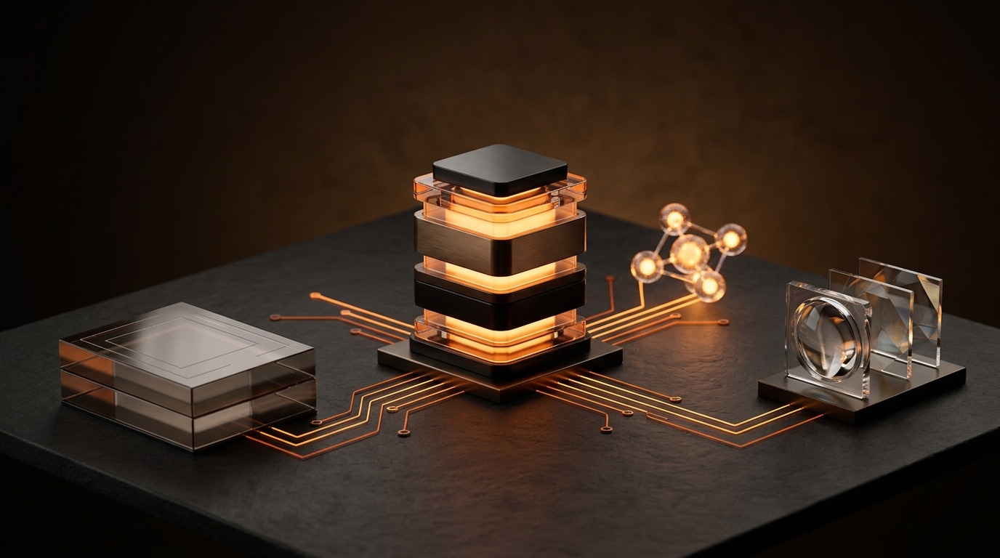
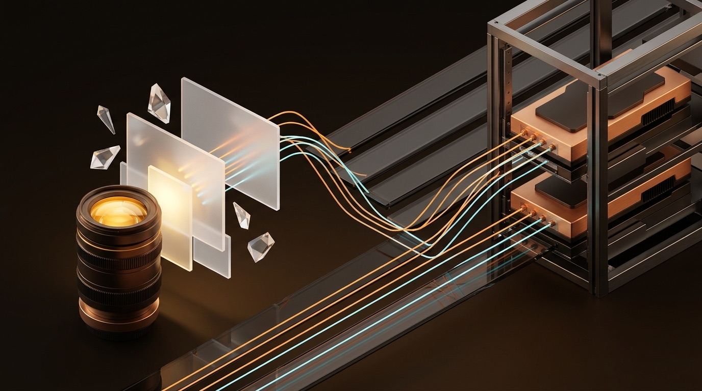

Go far beyond basic ollama run prompts—author deterministic Modelfile blueprints with LoRA adapters, orchestrate native multi-turn tools loops, lock JSON Schema format outputs, extract structured data from images, and tune VRAM concurrency for production daemons.
Modelfile & LoRA ADAPTER
ollama create / show / ps / stop
Native tools Function Loops
JSON Schema format Outputs
Multimodal Vision & OCR
OLLAMA_* Concurrency & CORS

FROM weights, SYSTEM rules, num_ctx, stop sequences, MESSAGE few-shots, and LoRA ADAPTER files into zero-copy tags./api/chat function loops, grammar-constrained JSON schemas, and multimodal screenshot or receipt parsing in Python and JS.OLLAMA_NUM_PARALLEL, OLLAMA_MAX_LOADED_MODELS, Flash Attention, quantized KV caches, and strict CORS daemon policies.Where our companion Local & On-Device AI Stack guide covers GGUF/MLX quantization math and OpenAI-compatible routing, this handbook dives straight into Ollama’s native engine. Treating Ollama as an image-layered server daemon—rather than a single-turn chat toy—unlocks reproducible models, parallel GPU slots, reliable tool calling, and structured vision extraction.
OLLAMA_* Matrixp. 3/api/chat & Slot Tourp. 4Modelfile Blueprints & LoRAsp. 5tools & Schema formatp. 6
Every ollama CLI command and SDK call is an HTTP client speaking JSON to the persistent background server listening on 127.0.0.1:11434. Weight tensors live once inside content-addressed SHA-256 blobs under ~/.ollama/models/blobs, while custom Modelfile aliases store tiny manifest layers on top.
receipt-json, sql-triage, code-review-32k) from one base model via ollama create does not copy multi-gigabyte weight files ten times. Ollama shares the identical underlying weight blob and writes only tiny configuration layers on disk.
Reliable Ollama engineering rests on two habits: inspecting and managing model blueprints explicitly with the CLI lifecycle verbs, and configuring server-side OLLAMA_* flags on the background daemon rather than temporary terminal tabs.
ollama create <tag> -f Modelfile: Builds a zero-copy alias; pass -q q4_K_M when importing unquantized F16/Safetensors weights.ollama show <tag>: Inspects architecture, context limit, and Capabilities (tools, vision, thinking). Add --modelfile or --template.ollama ps & ollama stop <tag>: Audits GPU/CPU split, context slot, and idle timer; stop frees VRAM immediately.ollama cp & ollama push: Re-tags local blueprints or shares custom variants to a registry.OLLAMA_NUM_PARALLEL, OLLAMA_FLASH_ATTENTION, and OLLAMA_KV_CACHE_TYPE are read strictly by ollama serve at startup—exporting them in ~/.zshrc does not reach a running GUI/service daemon.OLLAMA_HOST is read by both the daemon (bind IP) and CLI/SDK clients (target URL).keep_alive and options.num_ctx dynamically inside /api/chat JSON payloads.| Environment Variable | Default | Engineering Effect on Daemon | Recommended Tuning |
|---|---|---|---|
OLLAMA_NUM_PARALLEL |
1 (or auto) |
Concurrent slots per loaded model. Shares weights once, but multiplies KV cache RAM per slot. | 2–4 for async queues; 1 on 16 GB laptops. |
OLLAMA_MAX_LOADED_MODELS |
3 × GPUs |
Max distinct models kept hot in VRAM/RAM concurrently before LRU eviction. | 2–3 for Vision + Chat; 1 to guard VRAM. |
OLLAMA_FLASH_ATTENTION |
Auto / 0 |
Enables Flash Attention kernels to cut attention memory and speed long prompt prefill. | Set 1 on Apple Silicon and modern NVIDIA GPUs. |
OLLAMA_KV_CACHE_TYPE |
f16 |
KV cache precision (f16, q8_0, q4_0). Requires Flash Attention support. |
q8_0 cuts KV RAM ~50%; avoid q4_0 for code. |
OLLAMA_KEEP_ALIVE |
5m |
Idle unload timeout after final request (duration, -1 forever, 0 immediate). |
30m for dev work; -1 for pinned servers. |
OLLAMA_CONTEXT_LENGTH |
4096 (dep.) |
Global fallback context when neither Modelfile nor payload sets num_ctx. |
8192 or 16384 paired with q8_0 KV. |
OLLAMA_MAX_QUEUE |
512 |
Max queued requests waiting on busy slots before rejecting bursts with HTTP 503. |
Keep 512 (1024 for bursty workers). |
OLLAMA_ORIGINS |
Loopback | Comma-separated CORS origins allowed to call :11434 directly from browsers. |
Whitelist exact app URLs; avoid open *. |
ollama showollama show qwen3:8b and verify the Capabilities block lists tools, vision, or thinking alongside its context length before wiring production pipelines.
When an API request enters localhost:11434/api/chat, seven coordinated components fire together—from daemon memory tuning and parallel slot allocation down to image encoding, tool schemas, JSON grammar masking, and live telemetry.
q8_0 so long 16K contexts fit cleanly in GPU VRAM.
OLLAMA_NUM_PARALLEL slots and OLLAMA_MAX_LOADED_MODELS hot models simultaneously.
messages[].images (SDKs accept local file paths directly).
tools & format Controls: Declares callable JSON function schemas or token-level JSON Schema grammar masks per request.
think output for reasoning models and overrides default 5m unload via keep_alive.
tool_calls & Counters: Returns parsed tool names/arguments plus exact prompt_eval_count and eval_count metrics.
Modelfile Inspection: Run ollama show --modelfile <tag> anytime to audit the exact base weights, num_ctx, stop sequences, and baked system prompt governing a custom tag.
Modelfile Blueprints & LoRAs
A Modelfile is Ollama’s declarative recipe—conceptually just like a Dockerfile for local weights. Instead of repeating long system prompts, context window sizes, and few-shot examples in every script, bake them once into an immutable local tag.
ollama create stacks your SYSTEM persona, PARAMETER limits, MESSAGE few-shots, and optional LoRA ADAPTER weights onto shared base tensors without duplicating gigabytes.
| Instruction | Syntax Pattern | Engineering Purpose & Common Pitfall |
|---|---|---|
FROM (Req.) |
FROM qwen3:8b or ./weights.gguf |
Base model tag, GGUF file, or local Safetensors directory. Always first non-comment line. |
ADAPTER |
ADAPTER ./lora/adapter.safetensors |
Applies a LoRA fine-tune (.safetensors or .gguf) cleanly over the base model in FROM. |
PARAMETER |
PARAMETER num_ctx 16384 |
Sets num_ctx, temperature, min_p, top_p, repeat_penalty, seed, stop. Must include keyword! |
SYSTEM |
SYSTEM """...""" |
Bakes persistent persona, output rules, and refusal boundaries into every call automatically. |
MESSAGE |
MESSAGE user ... / assistant ... |
Pre-loads deterministic few-shot conversation turns so small 4B–8B models lock onto exact style. |
TEMPLATE |
TEMPLATE """{{ .System }}...""" |
Go template defining chat markers. Leave inherited from FROM unless fixing a broken raw GGUF. |
# Save as triage.Modelfile — run: ollama create support-triage:v1 -f triage.Modelfile
FROM qwen3:8b
# ADAPTER ./adapters/support-lora.safetensors # Optional: stack LoRA fine-tune onto base model
PARAMETER num_ctx 16384 # Prevent silent 4K prompt truncation
PARAMETER temperature 0.1 # Low variance for deterministic routing
PARAMETER min_p 0.05 # Prunes noisy tail tokens cleanly
PARAMETER stop "<|im_end|>" # Multiple stop parameters are additive
PARAMETER stop "END_TRIAGE"
SYSTEM """Classify support tickets into billing, auth, or bug. Cite only verified facts."""
MESSAGE user "SSO login returns HTTP 403 for EU users."
MESSAGE assistant {"queue":"auth","severity":"high","needs_logs":true}ollama show --modelfileollama show --modelfile qwen3:8b first, copy only the sections you intend to customize, and leave the base TEMPLATE intact so native tool calling keeps working.
tools Loops & JSON Schema format
Ollama’s native /api/chat endpoint supports both multi-turn function calling (tools) and token-level grammar-constrained JSON outputs (format). Understanding how the five request pieces fit together eliminates broken parsers and infinite agent loops.
tools-trained model (qwen3, llama3.3, mistral-small3.1) verified via ollama show,
[2. Tool Schemas] declare typed functions with clear parameter descriptions in tools[],
[3. Tool-Role Turn] append assistant tool_calls plus {"role":"tool","tool_name":...,"content":...} back into messages,
[4. Format Grammar] lock final extraction with a JSON Schema object in format,
[5. Sampler & Think Gate] and pin temperature: 0 with explicit think: true/false.
from ollama import chat
def check_inventory(sku: str) -> str:
"""Look up live warehouse count for a SKU."""
return {"SKU-42": "14 units in Seattle"}.get(sku, "0")
funcs = {"check_inventory": check_inventory}
msgs = [{"role": "user", "content": "How many SKU-42 left?"}]
for _ in range(4): # Cap loop turns for safety
res = chat(model="qwen3:8b", messages=msgs, tools=[check_inventory])
msgs.append(res.message)
if not res.message.tool_calls:
print(res.message.content)
break
for tc in res.message.tool_calls:
fn = funcs[tc.function.name]
out = fn(**tc.function.arguments)
msgs.append({
"role": "tool",
"tool_name": tc.function.name,
"content": str(out),
})format & thinkcurl -s http://127.0.0.1:11434/api/chat -d '{
"model": "qwen3:8b",
"stream": false,
"think": false,
"options": { "temperature": 0 },
"messages": [{
"role": "user",
"content": "Order #881 shipped 2 items to Portland."
}],
"format": {
"type": "object",
"properties": {
"order_id": { "type": "integer" },
"city": { "type": "string" },
"qty": { "type": "integer" }
},
"required": ["order_id", "city", "qty"]
}
}'
# Note: When think=true on reasoning models, chain-of-thought
# arrives in message.thinking separately from message.content!format Turnstools and a strict JSON Schema format in the exact same call can confuse tool-call token emission on some models. Gather facts across tool turns first, then omit tools on the final turn with format: schema to serialize clean JSON.
thinkqwen3 and deepseek-r1 separate private scratchpad tokens into message.thinking when think: true. Pass think: false on fast extraction endpoints to cut latency and output tokens dramatically.
While OpenAI-compatible /v1 wrappers make cloud swapping effortless, the official ollama Python and ollama-js SDKs expose Ollama-only superpowers: automatic Python function-to-tool introspection, Pydantic schema binding, separate thinking streams, keep_alive controls, and native ps() / show() management.
AsyncClient + Pydantic + Stream Thinking# pip install ollama pydantic
import asyncio
from pydantic import BaseModel
from ollama import AsyncClient
class TicketAudit(BaseModel):
category: str
urgent: bool
summary: str
async def analyze(text: str) -> TicketAudit:
client = AsyncClient(host="http://127.0.0.1:11434")
res = await client.chat(
model="support-triage:v1",
messages=[{"role": "user", "content": text}],
format=TicketAudit.model_json_schema(),
options={"temperature": 0},
keep_alive="30m", # Override daemon idle timer
)
return TicketAudit.model_validate_json(
res.message.content
)
# Streaming think vs content chunks:
# for c in client.chat("qwen3:8b", m, stream=True):
# if c.message.thinking: ...
# elif c.message.content: ...Ollama & ollama/browser// npm install ollama (use 'ollama/browser' in web apps!)
import { Ollama } from "ollama";
const client = new Ollama({ host: "http://127.0.0.1:11434" });
const res = await client.chat({
model: "qwen3:8b",
messages: [{ role: "user", content: "Classify: API 502 spike" }],
format: {
type: "object",
properties: {
severity: { type: "string", enum: ["low", "high"] },
service: { type: "string" },
},
required: ["severity", "service"],
},
options: { temperature: 0 },
keep_alive: "10m",
});
const parsed = JSON.parse(res.message.content);
// Programmatic residency check:
const active = await client.ps();
console.log(active.models.map((m) => m.name));
In Python, pass callables directly in tools=[my_fn]. The SDK converts type hints and Google-style docstrings into the exact JSON tool schema automatically—saving dozens of hand-written JSON lines.
Pair Python AsyncClient + asyncio.Semaphore(N) (or JS Promise.all) with OLLAMA_NUM_PARALLEL=N to process batch document triage cleanly without overwhelming the server queue.
Frontend bundles must import ollama/browser instead of ollama to omit Node filesystem helpers, and the local server must whitelist your origin via OLLAMA_ORIGINS.
keep_alive="-1" during startup warm-up scripts so primary models never unload mid-shift, and pass keep_alive=0 on the final request of a scheduled batch job so Ollama releases GPU VRAM immediately afterward.
Local vision models eliminate external OCR APIs for private receipts, UI bug screenshots, and architecture whiteboards. Combining Ollama’s images input field with a strict JSON Schema format turns raw pixels directly into typed database records.

format constrains decoded tokens into guaranteed JSON fields.
| Vision Model Family | Common Sizes | Strengths, OCR Fidelity & Selection Notes |
|---|---|---|
qwen2.5vl / qwen3-vl |
3B / 7B / 32B |
Top pick for receipts, invoices & UI screenshots. Exceptional dense text OCR, multi-column tables, and bounding accuracy. |
gemma3 |
4B / 12B / 27B |
Best all-around lightweight multimodal. Crisp speed on 16–32 GB laptops with strong chart and diagram comprehension. |
llama3.2-vision |
11B / 90B |
Strong general visual reasoning and chart Q&A; verify recent Ollama runtime compatibility for legacy Mllama builds. |
llava / minicpm-v |
7B–13B / 8B |
Compact baseline image captioning and low-VRAM edge OCR; pair with JSON Schema format for structured fields. |
# CLI quick check: ollama run qwen2.5vl:7b "Extract merchant, date, and total: ./receipt.jpg"
from pydantic import BaseModel
from ollama import chat
class Receipt(BaseModel):
merchant: str
date_iso: str
total_usd: float
line_items: list[str]
res = chat(
model="qwen2.5vl:7b",
messages=[{"role": "user", "content": "Extract receipt fields accurately.", "images": ["./receipt.jpg"]}],
format=Receipt.model_json_schema(), # Vision + Grammar-enforced JSON in one native call!
options={"temperature": 0, "num_ctx": 8192},
)
receipt = Receipt.model_validate_json(res.message.content)1280px–1600px on the longest edge keeps small receipt digits razor-sharp while running 3–5x faster.
Drop these five battle-tested recipes straight into your terminal, build script, or microservice to lock down deterministic Modelfiles, quantize custom adapters, parse images into JSON, orchestrate tools, and warm-pin VRAM cleanly.
| Recipe & Use Case | Copy-Paste Command or Production Snippet |
|---|---|
1. Deterministic 16K Modelfile TagZero-copy custom alias |
printf 'FROM qwen3:8b\nPARAMETER num_ctx 16384\nPARAMETER temperature 0\nPARAMETER min_p 0.05\nSYSTEM "Reply concisely with verified facts only."\n' > Dev.Modelfileollama create dev-16k:v1 -f Dev.Modelfile && ollama show --modelfile dev-16k:v1
|
| 2. LoRA Adapter + Quantize Import Custom fine-tune build |
printf 'FROM ./base-safetensors\nADAPTER ./my-lora.safetensors\nPARAMETER num_ctx 8192\n' > Fine.Modelfileollama create my-tuned:q4 -q q4_K_M -f Fine.Modelfile (Check ollama create --help for supported quant targets)
|
| 3. Ephemeral Vision JSON Extractor Zero-footprint receipt batch |
B64=$(base64 -i receipt.jpg | tr -d '\n')curl -s http://127.0.0.1:11434/api/chat -d "{\"model\":\"qwen2.5vl:7b\",\"stream\":false,\"keep_alive\":\"0\",\"options\":{\"temperature\":0},\"messages\":[{\"role\":\"user\",\"content\":\"Extract merchant and total\",\"images\":[\"$B64\"]}],\"format\":{\"type\":\"object\",\"properties\":{\"merchant\":{\"type\":\"string\"},\"total\":{\"type\":\"number\"}},\"required\":[\"merchant\",\"total\"]}}"
|
| 4. Safe Multi-Turn Tool Loop Python SDK auto-schema |
msgs = [{"role": "user", "content": prompt}]while (r := chat(model="qwen3:8b", messages=msgs, tools=[fn])).message.tool_calls: msgs += [r.message] + [{"role": "tool", "tool_name": t.function.name, "content": str(funcs[t.function.name](**t.function.arguments))} for t in r.message.tool_calls]
|
| 5. Warm-Pin & Instant Evict Cycle Eliminate cold-start lag |
curl -s http://127.0.0.1:11434/api/generate -d '{"model":"dev-16k:v1","keep_alive":-1}' (Pre-load into GPU)ollama ps && ollama stop dev-16k:v1 (Audit live GPU split, then release VRAM instantly)
|
{"model": "...", "keep_alive": -1} and no prompt loads the tensors into VRAM immediately without generating a single token—perfect for container health checks or workstation boot hooks.
OLLAMA_DEBUG=1OLLAMA_DEBUG=1 ollama serve in a staging terminal to inspect rendered prompt strings and KV allocation logs.
Scaling Ollama from a single chat session to concurrent background workers requires budgeting KV cache memory accurately, locking down unauthenticated endpoints, and persisting environment variables inside your OS service manager.
Raising OLLAMA_NUM_PARALLEL=4 shares one copy of model weights in VRAM, but allocates four independent KV cache slots:
Total VRAM ≈ Weights + (Single_KV × NUM_PARALLEL) + Runtime
Pair OLLAMA_FLASH_ATTENTION=1 and OLLAMA_KV_CACHE_TYPE=q8_0 before increasing parallel slots so 4 concurrent 16K sessions do not push layers onto CPU RAM!
OLLAMA_ORIGINS Hardening
Ollama ships with zero built-in authentication. Always keep OLLAMA_HOST=127.0.0.1:11434 unless fronted by a TLS + bearer-token reverse proxy (covered in our Local Coding & Private LAN guide).
For browser apps using ollama/browser, avoid leaving OLLAMA_ORIGINS="*" open permanently—whitelist exact origins like https://tools.internal,http://localhost:5173.
LaunchAgents Plist)<!-- ~/Library/LaunchAgents/com.ollama.server.plist -->
<plist version="1.0"><dict>
<key>Label</key><string>com.ollama.server</string>
<key>ProgramArguments</key>
<array><string>/opt/homebrew/bin/ollama</string><string>serve</string></array>
<key>RunAtLoad</key><true/><key>KeepAlive</key><true/>
<key>EnvironmentVariables</key><dict>
<key>OLLAMA_NUM_PARALLEL</key><string>2</string>
<key>OLLAMA_MAX_LOADED_MODELS</key><string>2</string>
<key>OLLAMA_FLASH_ATTENTION</key><string>1</string>
<key>OLLAMA_KV_CACHE_TYPE</key><string>q8_0</string>
<key>OLLAMA_KEEP_ALIVE</key><string>30m</string>
<key>OLLAMA_ORIGINS</key>
<string>http://localhost:5173</string>
</dict>
</dict></plist>
# Apply: launchctl bootstrap gui/$(id -u) ~/Library/LaunchAgents/com.ollama.server.plistsystemd Override & Docker GPU# 1. Linux systemd drop-in: sudo systemctl edit ollama
[Service]
Environment="OLLAMA_HOST=127.0.0.1:11434"
Environment="OLLAMA_NUM_PARALLEL=4"
Environment="OLLAMA_MAX_LOADED_MODELS=2"
Environment="OLLAMA_FLASH_ATTENTION=1"
Environment="OLLAMA_KV_CACHE_TYPE=q8_0"
Environment="OLLAMA_KEEP_ALIVE=30m"
Environment="OLLAMA_MAX_QUEUE=512"
# Reload: sudo systemctl daemon-reload && sudo systemctl restart ollama
# 2. Containerized GPU Worker (Docker):
docker run -d --gpus all -v ollama_data:/root/.ollama \
-p 127.0.0.1:11434:11434 \
-e OLLAMA_NUM_PARALLEL=4 -e OLLAMA_FLASH_ATTENTION=1 \
-e OLLAMA_KV_CACHE_TYPE=q8_0 --name ollama ollama/ollamalaunchctl setenv Resets on Reboot; .zshrc Never Reaches GUI Serviceslaunchctl setenv updates GUI apps for the current login only and clears after a reboot—and exporting OLLAMA_* inside ~/.zshrc only affects manual foreground ollama serve runs. Put production settings inside a LaunchAgents plist (macOS) or systemctl edit ollama (Linux) and verify via server logs.
Instead of forcing one massive general model to interpret images, call APIs, and format database rows simultaneously, Ollama’s multi-model loader lets specialized lightweight models hand clean typed JSON down an automated local pipeline.
Python watchers downscale incoming receipt photos or UI captures to 1400px max width and call qwen2.5vl with a strict Pydantic format schema so ambiguous pixels convert straight into clean JSON.
Hand that clean JSON payload to qwen3 with native tools (lookup_vendor, check_duplicate_invoice, post_alert) capped to 4 turns so the model grounds decisions in real local databases.
On 32–64 GB workstations, set OLLAMA_MAX_LOADED_MODELS=2 to keep both models warm side-by-side. On 16 GB laptops, pass keep_alive=0 on Stage 2 so Stage 3 claims full GPU memory cleanly.
Persist validated rows into SQLite or fire Slack/n8n alerts, while exposing tuned Modelfile tags over :11434 for coding harnesses covered in our companion Ollama Local Coding & Harnesses guide.
7B vision extractor into an 8B tool-calling tag typically finishes faster, consumes less peak VRAM (with keep_alive=0 swaps), and hits higher schema reliability than cramming OCR and multi-tool planning into one giant prompt.
Keep this rapid diagnostic guide close whenever a Modelfile fails to compile, daemon flags silently vanish, tool calls leak into plain text, or parallel slots push VRAM into slow CPU spillover.
| Symptom / Failure | Root Cause | 10-Second Fix |
|---|---|---|
1. ollama create rejects parameter line |
Wrote bare num_ctx 16384 without PARAMETER keyword or unclosed quotes. |
Prefix every parameter with PARAMETER (e.g., PARAMETER num_ctx 16384) and wrap multi-line prompts in triple quotes """...""". |
2. OLLAMA_* vars in .zshrc do nothing |
Background menu-bar app or systemd daemon never reads shell rc files. |
Move env vars into ~/Library/LaunchAgents/*.plist (macOS) or sudo systemctl edit ollama (Linux) and restart the daemon. |
3. Model outputs raw JSON text instead of tool_calls |
Model lacks native tools capability, or format conflicted with tool tokens. |
Run ollama show <tag> to confirm tools support, use qwen3/llama3.3, and run final format pass without tools attached. |
4. Raising OLLAMA_NUM_PARALLEL drops GPU to CPU |
Each parallel slot duplicates the full KV cache buffer in VRAM. | Set OLLAMA_FLASH_ATTENTION=1 and OLLAMA_KV_CACHE_TYPE=q8_0, trim num_ctx, and verify 100% GPU in ollama ps. |
5. Browser ollama-js calls fail with CORS error |
Daemon blocks non-loopback browser origins by default. | Set OLLAMA_ORIGINS="https://your-app.com,http://localhost:5173" on the server daemon and import ollama/browser. |
| 6. Vision OCR crawls or misreads small digits | Unresized 4K images bloat visual tokens and saturate prefill memory. | Resize longest edge to 1280–1600px, switch to qwen2.5vl, set temperature: 0, and enforce a JSON Schema format. |
7. HTTP 503 Server Busy or lost early rules |
Request burst exceeded OLLAMA_MAX_QUEUE (512) or hit 4K default num_ctx. |
Add exponential backoff in clients, bake explicit PARAMETER num_ctx into a Modelfile, or raise OLLAMA_CONTEXT_LENGTH. |
tools, vision, or thinking support and context ceiling via ollama show <tag>.FROM, PARAMETER num_ctx, temperature, stop, and SYSTEM cleanly with ollama create.q8_0 KV: Persist OLLAMA_FLASH_ATTENTION=1 and OLLAMA_KV_CACHE_TYPE=q8_0 in your daemon service.100% GPU Under Load: Budget Single_KV × NUM_PARALLEL and inspect ollama ps while concurrent requests run.max_turns, return role: "tool" + tool_name, and validate format output with Pydantic/Zod.OLLAMA_HOST=127.0.0.1:11434 (unless behind TLS + auth) and scope OLLAMA_ORIGINS tightly.Modelfile blueprints, bounded native tool loops, Pydantic-enforced Vision schemas, and daemon-persisted VRAM tuning, local AI stops behaving like a black box and runs like rock-solid local infrastructure.